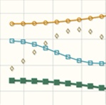
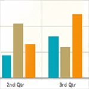
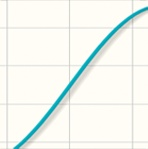
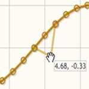
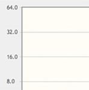
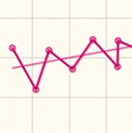

A Versatile and Expandable jQuery Plotting Plugin!
jqPlot is a plotting plugin for the jQuery Javascript framework. jqPlot produces beautiful line and bar charts with many features including:
- Numerous chart style options.
- Date axes with customizable formatting.
- Rotated axis text.
- Automatic trend line computation.
- Tooltips and data point highlighting.
- Sensible defaults for ease of use.
jqPlot is an open source project by Chris Leonello
Download Now!
jqPlots Strongest Feature is it's Plugability!
Computation and drawing of lines, axes, shadows even the grid itself is handled by pluggable "renderers". Not only are the plot elements customizable, plugins can expand functionality of the plot too! There are plenty of hooks into the core jqPlot code allowing for custom event handlers, creation of new plot types, adding canvases to the plot, and more!
|  |  |  |
Numerous line style options with 6 built in marker styles!
|
Horizontal and vertical Bar charts!
|
Shadow control on lines, markers, the grid, everything!
|
|  |  |  |
Drag and drop points with auto updating of data!
|
Log Axes with flexible tick marks!
|
Trend lines computed automatically!
|
jqPlot has been tested on IE 6, IE 7, IE 8, Firefox, Safari, and Opera. You can see jqPlot in action on the tests & examples page.